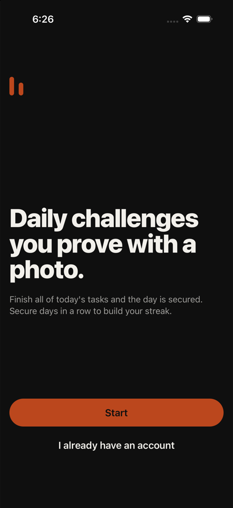
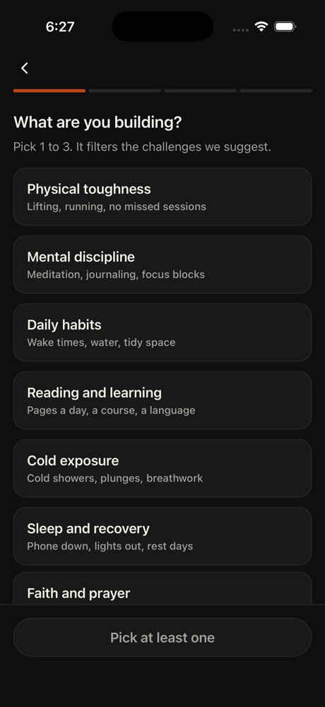
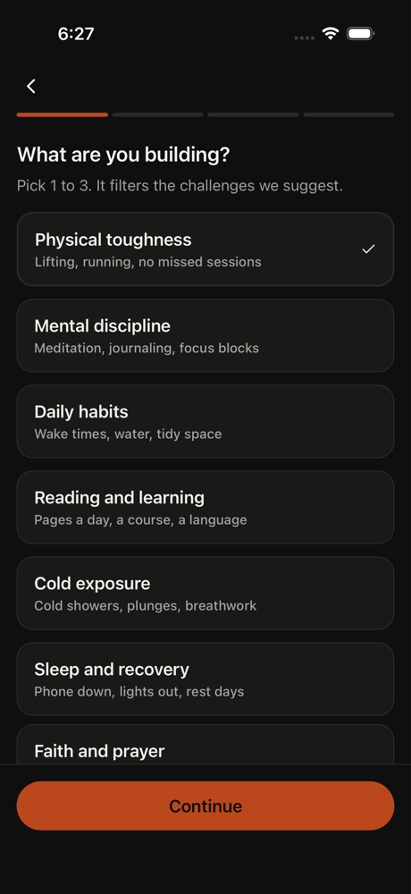
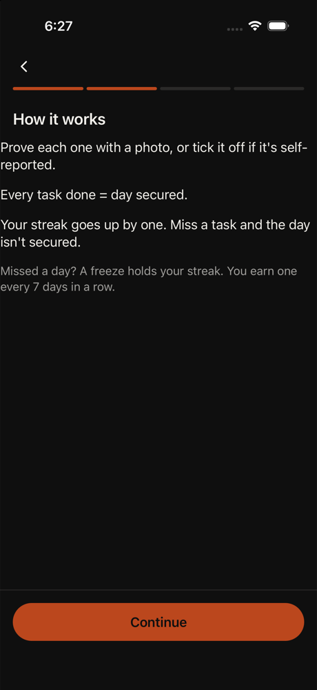
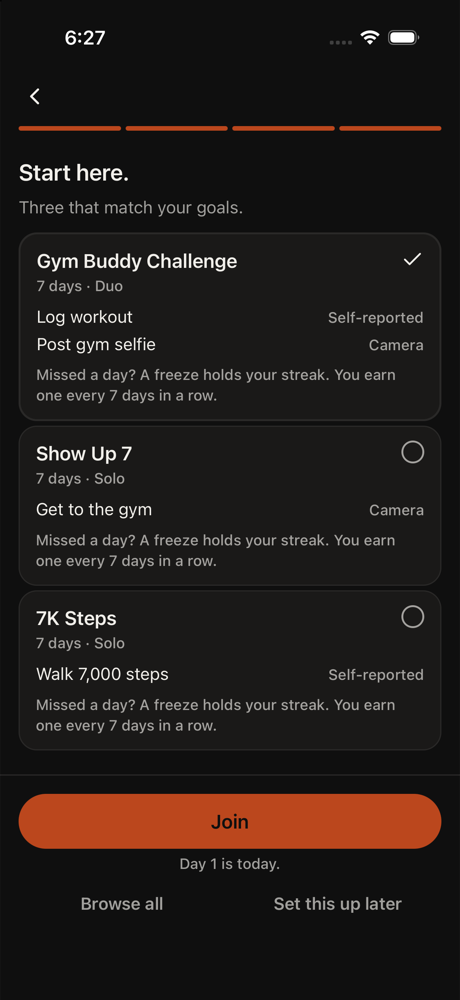
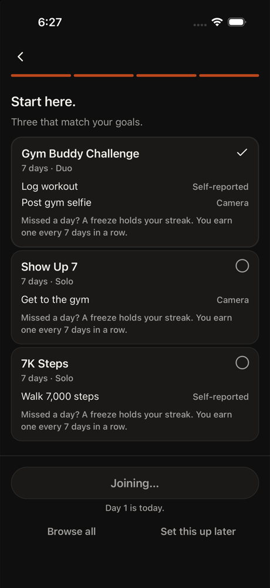
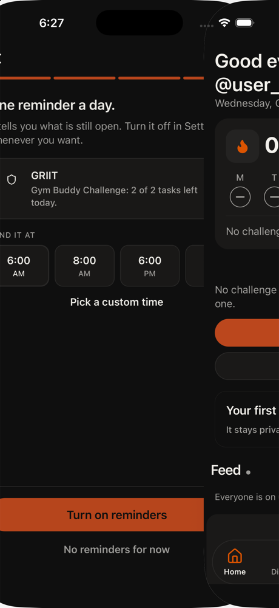
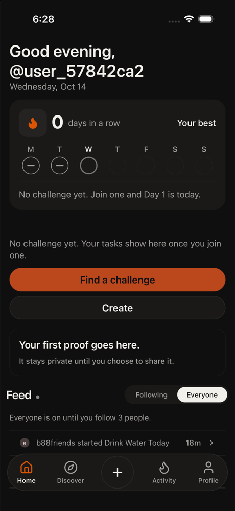
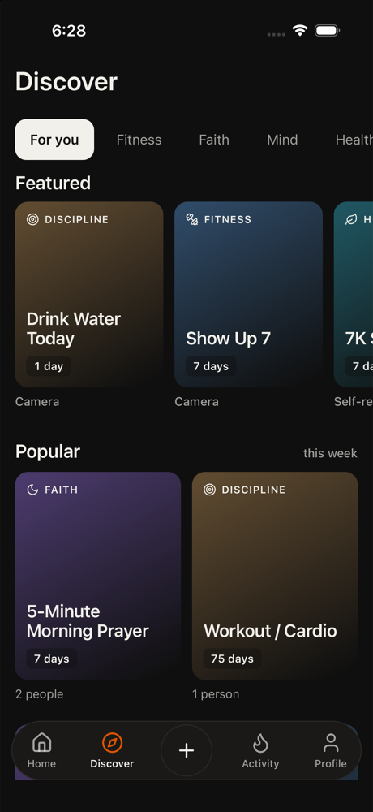
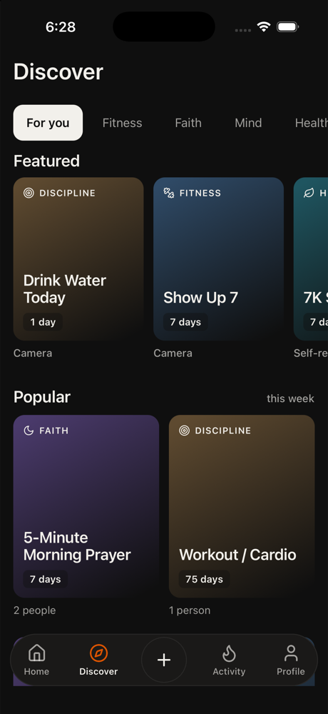

All agents
Casey
Quit three habit apps. Skeptical. Hunting for reasons to leave.
Checking whether this one is the same as the others. Tech high, patience 2, phone small, text default, skeptical, English native.
Funnel stage: discover. Stages: opened → home → discover. Steps 11. 128s. is_test true. Gave up. discover repeated 3 times.
GRIIT iPhone 16. Persona phone size was recorded and not applied, because this is the simulator that has the app installed. Text size applied: large. Cleanup: kept
Goals
- Fail · observed · Look for a catch, then leave if the first task feels like a trick.
not seen on screen
Issues
- discover: the same screen came up 3 times
- Failed to run flow: Device became unreachable during viewHierarchy
- Gave up. discover repeated 3 times.
Timeline

1. home tap Start
Welcome screen for GRIIT. The app pitches daily photo challenges. I'm skeptical about this being different from the three I already quit, but I need to walk through the onboarding to see if there's a catch. Tapping Start to proceed.
neutral · 13579ms

2. onboarding tap Physical toughness
I need to pick 1-3 categories to filter challenges. Physical toughness seems like the most straightforward - lifting and running are measurable. Let me select this one and see what happens next. I'm looking for any sign this is a gimmick like the others.
neutral · 3810ms

3. onboarding tap Continue
Physical toughness is already selected. I picked 1 category as instructed. Now I need to tap Continue to move forward and see what comes next. Still looking for the catch that made me quit the other three apps.
neutral · 3743ms

4. home tap Continue
Onboarding screen explaining how the app works. They're pitching streaks, photo proof or self-reported tasks, and freezes as streak protection. Classic habit app mechanics. I need to keep walking through to see if there's a trick or if it's just another streak-based app like the
neutral · 3947ms

5. onboarding tap Join
I'm at the 'Start here' screen with three challenges displayed. The 'Gym Buddy Challenge' is already selected (checkmark visible). The app is asking me to join one of these challenges. I need to tap 'Join' to proceed with the first task and see what happens next. Looking for any
neutral · 9629ms

6. auth tap Turn on reminders
I'm at the reminders screen after joining the Gym Buddy Challenge. The app is asking me to set up daily reminders. I need to turn on reminders to complete the onboarding flow and reach Home as a guest. After this, I should be able to finish one task with a Done button and then sa
neutral · 5327ms

7. home tap Turn on reminders
I'm at Home but haven't completed reminders setup yet. The orange 'Turn on reminders' button is still visible at the bottom. I need to tap this to finish the onboarding flow before accessing the first task to complete.
Error: Failed to run flow: Device became unreachable during viewHierarchy
neutral · 27814ms

8. home tap Find a challenge
I'm at Home as a guest. The onboarding is complete. I see 'Find a challenge' button which should let me join a challenge and access the first task. I'm still looking for any catch or trick that would make this app like the others I quit.
neutral · 13391ms

9. discover back
I'm on the Discover tab but I need to be on Home to complete a task. The instructions say to reach Home as a guest and finish one task with a Done button. I quit three apps already looking for catches—I need to get back to Home and actually complete a task to see if there's a tri
neutral · 6636ms

10. discover back
I'm on Discover but need to be on Home to complete a task. The instructions are clear: reach Home as a guest and finish one task with a Done button. I've been walking through onboarding and joined the Gym Buddy Challenge. Now I need to go back to Home to access and complete the f
neutral · 12024ms

11. discover abort
Error: Gave up. discover repeated 3 times.
frustrated · 2264ms